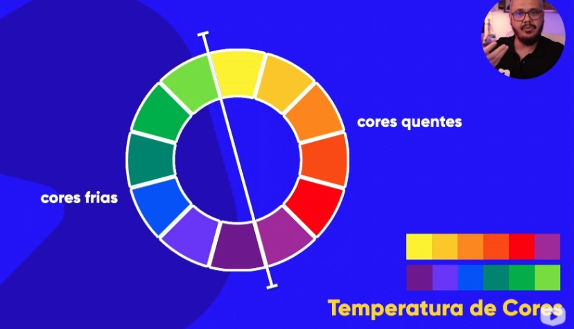
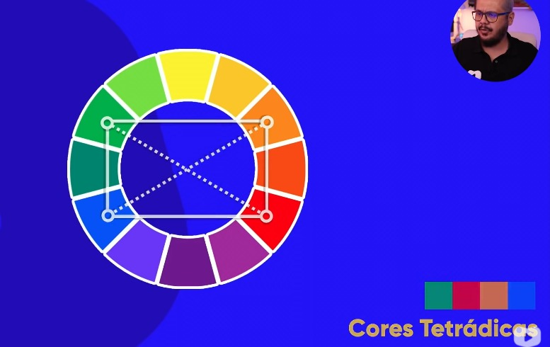

Cores do círculo cromático
Cores primárias
amarelo
vermelho
azul
Cores secundárias
laranja
violeta
verde
Cores terciárias
amarelo-esverdeado
amarelo-alaranjado
vermelho-alaranjado
vermelho-arroxeado
azul-arroxeado
azul esverdeado
Temperatura de cores
Cores frias e quentes

Cores complementares
são as cores opostas no círculo cromático
Cores análogas
cores próximas
Cores análogas relacionadas
escolhe duas cores próximas e pula e uma cor
isso vai fazer com que vc tenha duas cores próxiams e uma com contraste
Cores intercaladas
escolhe uma cor, pula uma cor e pula outra
Cores triádicas
faça um triângulo equilatero e pegue as três cores
Cores em quadrado
faça um quadrado no círculo e use as cores
Cores tetrádicas

Monocromia
modificação de saturação e luminosidade de qualquer cor